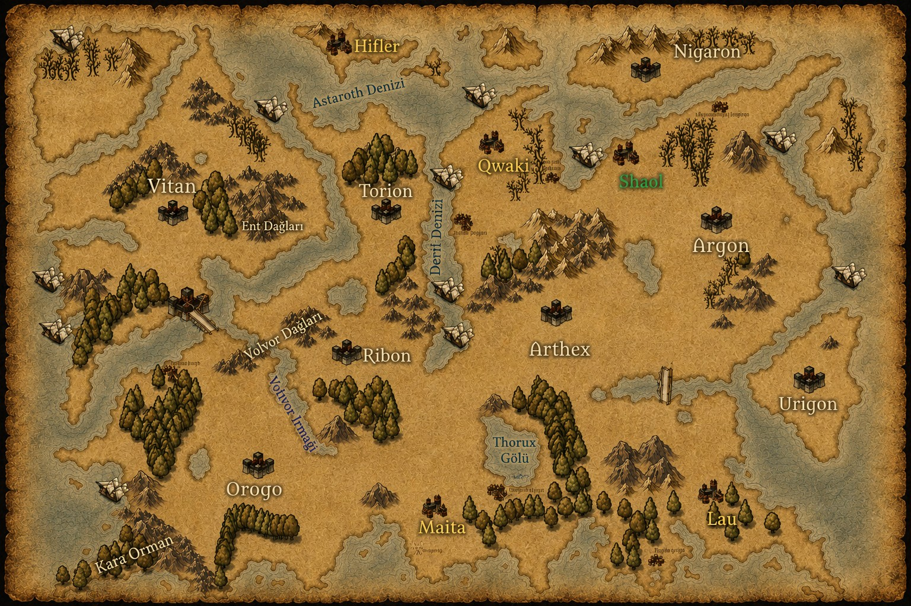

Ansiklopedi · Coğrafya
Dünya Haritası
Yedi kadim krallığın toprakları, Kara Orman'ın gölgesinden Volvor Dağları'nın doruklarına uzanır. Haritada gezinmek için sürükleyin, yakınlaşmak için fare tekerleğini veya sağ alttaki kontrolleri kullanın. Altın işaretlere tıklayarak ilgili ırkın kaydını açabilirsiniz.

Vitan Torion Qwaki Nigaron Shaol Argon Ribon Arthex Urigon Orogo Maita Lau Hifler Kara Orman Thorux GölüSürükle · Tekerlekle yakınlaştır · Çift tıkla
Altın renkli işaretler ırk kayıtlarına, soluk işaretler ise coğrafi noktalara işaret eder. Tüm yerlerin tam listesi için aşağıya veya Evren sayfasındaki "Mekanlar" sekmesine bakabilirsiniz.
Kayıtlı Yerler
Bilinen Topraklar
Yedi krallığın sınırları içinde ve dışında kalan, ansiklopediye kaydedilmiş yerler.